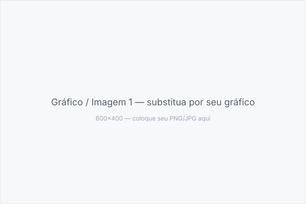
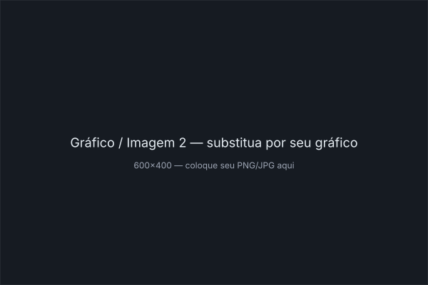
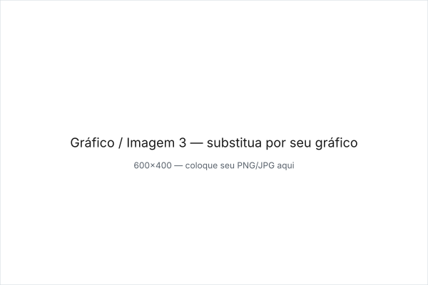

O HUB de Alunos nasceu da necessidade de centralizar a vida acadêmica fora do SIGAA. Em vez de grupos dispersos no WhatsApp, a plataforma reúne materiais por disciplina, fóruns tira-dúvidas, mural de eventos e um sistema de mentoria onde veteranos apadrinham calouros.
Arquitetura pensada para escalar: Next.js App Router com SSR para SEO, autenticação via NextAuth, RBAC (aluno, monitor, coordenador), Prisma ORM com Postgres e upload de PDFs/imagens com validação. Foco em acessibilidade e performance mobile.
Galeria — Interface e Fluxos
Prints da plataforma: feed, página de disciplina e perfil.

Figura 1 — Feed com materiais e filtros por curso.

Figura 2 — Fórum por disciplina com threads e marcação de dúvida resolvida.

Figura 3 — Mural de eventos e mentoria.
Arquitetura
Monorepo com Next.js 14, Server Actions, Prisma + Postgres, validação Zod, testes com Vitest, CI no GitHub Actions e deploy na Vercel. Decisões: paginação por cursor no feed, cache com revalidateTag e design system com Tailwind + shadcn.